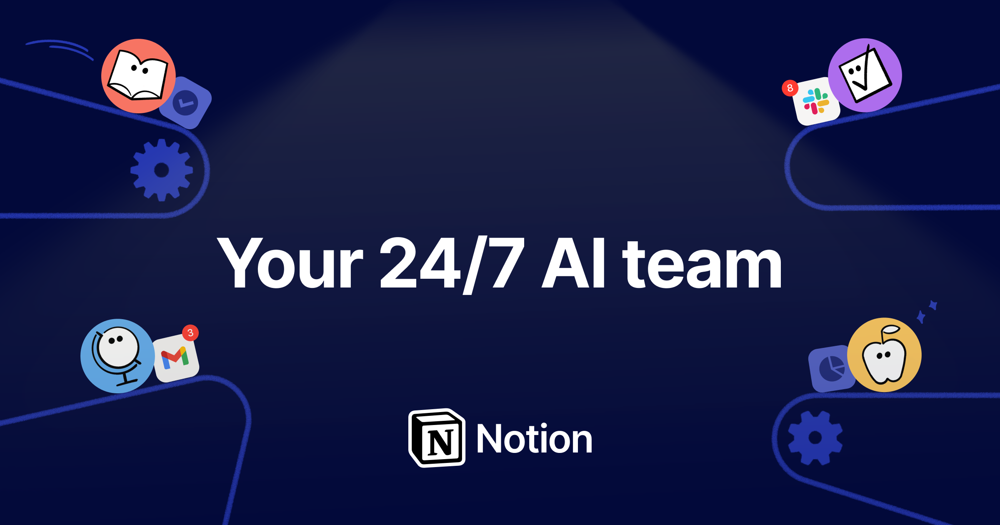

<template id="beat-1-template">
  <div data-composition-id="beat-1-the-number" data-width="1920" data-height="1080" data-start="0" data-duration="4.3">
    <!-- Background: og-image hero -->
    <div class="bg-layer">
      
    </div>

    <!-- Midground: Typography -->
    <div class="mg-layer">
      <div class="number-wrap">
        <span class="big-number">100M+</span>
      </div>
      <div class="tagline-wrap">
        <span class="char">M</span><span class="char">e</span><span class="char">e</span><span class="char">t</span><span class="char">&nbsp;</span><span class="char">t</span><span class="char">h</span><span class="char">e</span><span class="char">&nbsp;</span><span class="char">n</span><span class="char">i</span><span class="char">g</span><span class="char">h</span><span class="char">t</span><span class="char">&nbsp;</span><span class="char">s</span><span class="char">h</span><span class="char">i</span><span class="char">f</span><span class="char">t</span><span class="char">.</span>
      </div>
    </div>

    <!-- Foreground: Notion logo + vignette -->
    <div class="fg-layer">
      
      <div class="vignette"></div>
    </div>

    <style>
      @import url('https://fonts.googleapis.com/css2?family=Inter:wght@400;600;800&display=block');

      [data-composition-id="beat-1-the-number"] {
        width: 1920px;
        height: 1080px;
        overflow: hidden;
        position: relative;
        background: #02093A;
        font-family: 'Inter', sans-serif;
      }

      .bg-layer {
        position: absolute;
        inset: 0;
        display: flex;
        align-items: center;
        justify-content: center;
        opacity: 0;
      }

      .hero-bg {
        width: 1920px;
        height: 1080px;
        object-fit: cover;
      }

      .mg-layer {
        position: absolute;
        inset: 0;
        display: flex;
        flex-direction: column;
        align-items: center;
        justify-content: center;
        z-index: 2;
      }

      .number-wrap {
        display: flex;
        align-items: center;
        justify-content: center;
      }

      .big-number {
        font-size: 180px;
        font-weight: 800;
        color: #FFFFFF;
        letter-spacing: -0.03em;
        line-height: 1;
      }

      .tagline-wrap {
        display: flex;
        align-items: center;
        justify-content: center;
        margin-top: 32px;
        opacity: 0;
      }

      .char {
        display: inline-block;
        opacity: 0;
        font-size: 48px;
        font-weight: 400;
        color: #FFFFFF;
        font-style: italic;
        font-family: 'Georgia', serif;
        letter-spacing: -0.01em;
      }

      .fg-layer {
        position: absolute;
        inset: 0;
        z-index: 3;
        pointer-events: none;
      }

      .notion-logo {
        position: absolute;
        bottom: 60px;
        left: 50%;
        margin-left: -20px;
        width: 40px;
        height: auto;
        opacity: 0;
        filter: brightness(0) invert(1);
      }

      .vignette {
        position: absolute;
        inset: 0;
        background: radial-gradient(ellipse at center, transparent 40%, rgba(2, 9, 58, 0.6) 100%);
      }
    </style>

    <script src="https://cdn.jsdelivr.net/npm/gsap@3.14.2/dist/gsap.min.js"></script>
    <script>
      window.__timelines = window.__timelines || {};
      var tl = gsap.timeline({ paused: true });
      var comp = document.querySelector('[data-composition-id="beat-1-the-number"]');
      var chars = comp.querySelectorAll('.char');

      // 100M+ STAMPS in at 0.1s
      tl.from('.big-number', {
        scale: 1.3,
        opacity: 0,
        duration: 0.15,
        ease: 'power4.out'
      }, 0.1);

      // Number drifts up and scales down as bg fades in
      tl.to('.big-number', {
        y: -180,
        scale: 0.6,
        duration: 1.2,
        ease: 'power2.inOut'
      }, 1.5);

      // og-image FADES in behind
      tl.to('.bg-layer', {
        opacity: 0.7,
        duration: 1.0,
        ease: 'power1.out'
      }, 1.5);

      // Slow zoom on hero bg (continuous over beat duration)
      tl.fromTo('.hero-bg', {
        scale: 1.02
      }, {
        scale: 1.06,
        duration: 4.3,
        ease: 'none'
      }, 0);

      // Notion logo fades in
      tl.to('.notion-logo', {
        opacity: 1,
        duration: 0.6,
        ease: 'power2.out'
      }, 3.0);

      // Tagline wrap fades in
      tl.to('.tagline-wrap', {
        opacity: 1,
        duration: 0.01
      }, 2.6);

      // Tagline types on character by character
      tl.to(chars, {
        opacity: 1,
        stagger: 0.04,
        ease: 'power2.out',
        duration: 0.1
      }, 2.6);

      // Exit: zoom through
      tl.to(comp, {
        scale: 1.15,
        filter: 'blur(16px)',
        opacity: 0,
        duration: 0.25,
        ease: 'power3.in'
      }, 4.0);

      window.__timelines["beat-1-the-number"] = tl;
    </script>
  </div>
</template>
